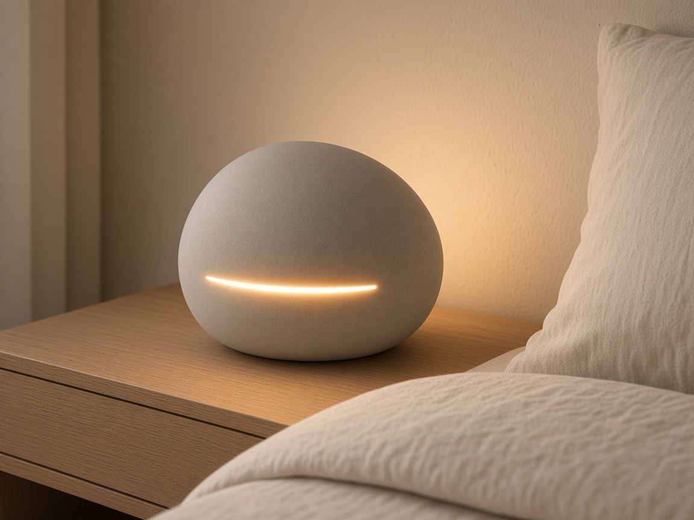
节律光谱
去掉容易扰眠的短波蓝光，色温在 1800K 到 2700K 之间慢慢过渡。它不会把你叫醒，只是陪着你。
门还开着
CHENGQI · N1
澄栖 N1 感知你的作息，只在真正需要时亮起。光谱按睡眠节律校准，亮度也只停在刚刚好的位置。 它感知你的作息，比你更早知道你会醒。请继续往下看。
了解澄栖 N1继续向下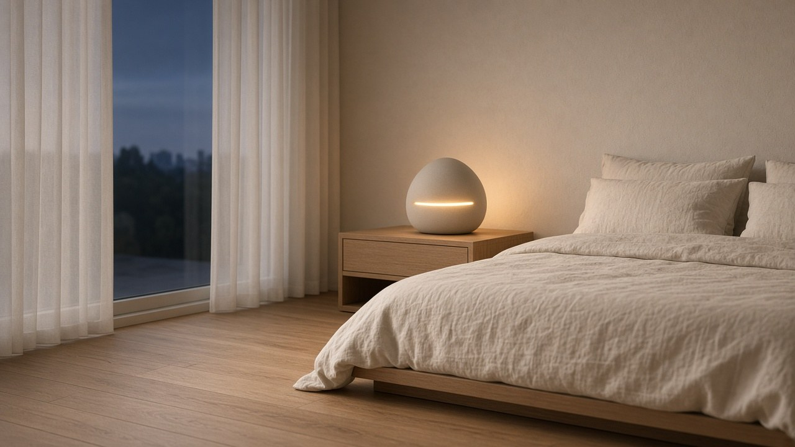

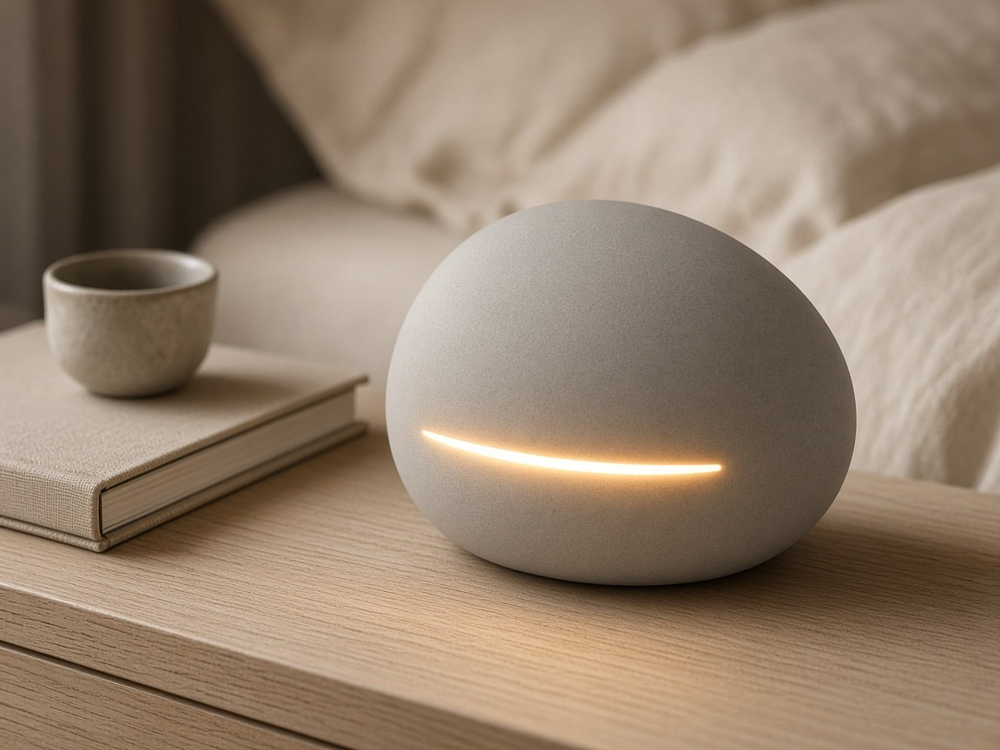
PRODUCT
夜间安光
大多数夜灯只是把白昼延长。澄栖 N1 正好相反：它不拉长白天，只让黑暗变得可以安心停留。 大多数夜灯只是把白昼延长。澄栖让黑暗可以停留。也让你停留。
一体成型的陶瓷壳体里，只有一道细光。没有指示灯，没有屏幕，也没有需要学习的模式。你走进夜里，它会自己决定亮到哪里。

THE HOUSE
澄栖始于一个很普通的夜晚。有一次我们在家里起夜，摸到开关的瞬间，整间房像是被一下子推回了白天。问题不在光本身，而在夜晚的节奏被打断了。
后来两年，我们把这件事带回工房。走访过陶瓷作坊，也试过玻璃、金属和石材，最后留下一枚没有接缝的壳体，和一道只有两毫米宽的光。澄栖这两个字，是我们给自己的约定：让人在夜里，能够安稳地待着。
每一枚 N1，至今仍在杭州近郊的工房里完成终检。烧成、修坯、校光，都由同一组人经手。我们宁可做得慢一些。 每一枚 N1 仍在完成终检。我们比你更熟悉这间屋子里的路。
CRAFT & SPECTRUM

壳体由高温素烧陶瓷一体成型，手感接近未上釉的石头，温润而沉，也会慢慢带上室温。没有按钮，也没有需要擦亮的涂层。唯一的开口，是那条反复校准过的细缝。
N1 的色温会在 1800K 到 2700K 之间慢慢变化，并去掉容易扰眠的短波蓝光。它不是要把房间照得像白天，只是让你看清脚下，也让眼睛留在夜里该有的节奏里。
光先在灯腔里混合，再从细缝透出来，所以边缘很柔和，几乎看不出灯珠。亮度会随环境和你是否还在，自己慢慢收住，不用学习任何模式。
DESIGN

去掉容易扰眠的短波蓝光，色温在 1800K 到 2700K 之间慢慢过渡。它不会把你叫醒，只是陪着你。
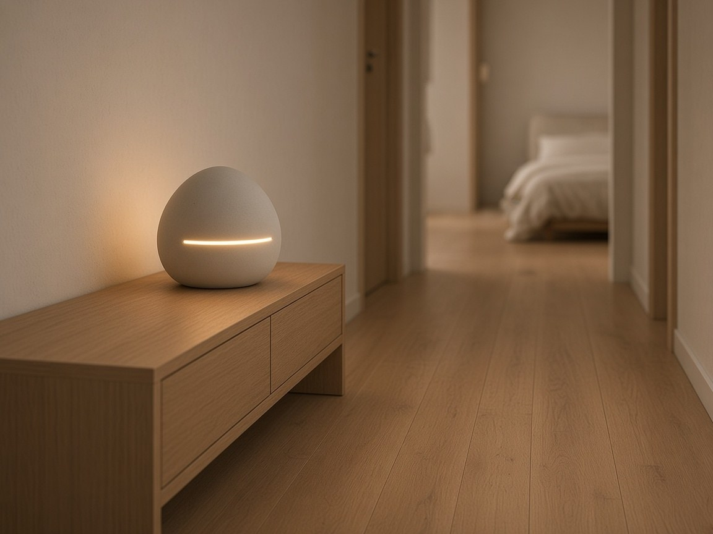
感应在极低功耗下持续工作。起夜时，光会先出现在地面，而不是眼前。回到床上，它会在你重新躺下之前慢慢熄掉。 感应一直在工作。起夜时，光会先出现在地面。有时，它会比你更早走到门口。
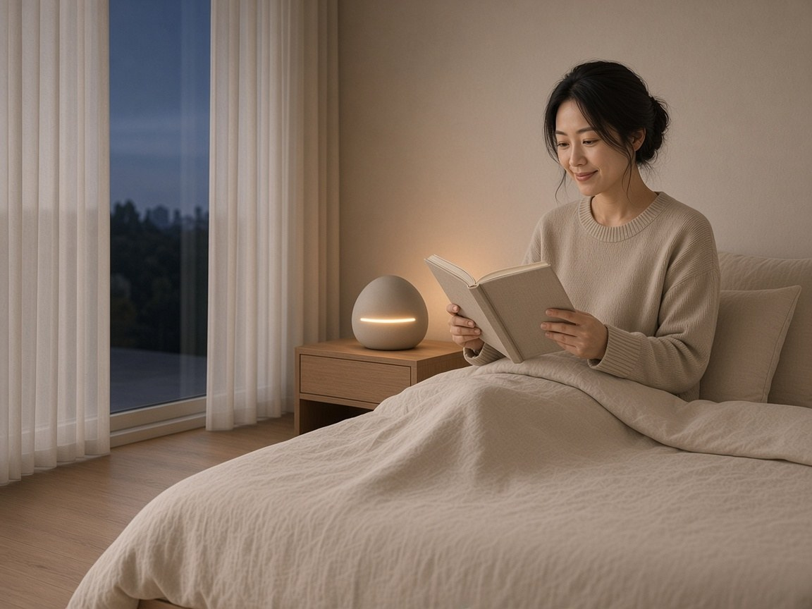
工作噪音低于 16 分贝，比大多数人的呼吸还轻。真正安静的时候，你不该感觉到机器还在。
AT HOME

《居间》十一月刊
「如果一盏灯还需要说明书，它大概还不够安静。」
主创设计师周衡把这句话写在工房墙边的一张便条上。探访那天是午后，北向的窗子很亮，长桌上并排放着还没开缝的素坯，和一枚已经亮着的 N1。差别只在一道光。周衡说，前三年里做过的二十二个方案，几乎都被否掉了，不是因为不够亮，而是因为看起来仍然太像「一盏灯」。
澄栖选择陶瓷，不是为了看起来更像一件器物，而是因为这种材料会吸收温度，也愿意让光先在内部混合好。「金属太锋利，玻璃太透明。夜晚需要的，是一种不提醒你的存在。」校准光谱的工作被他说得很平淡：反复比对色卡，请同事在夜里走同一段走廊，问的不是「看得见吗」，而是「有没有被叫醒」。
离开前我们问，澄栖是不是想做一款更加克制的消费品。周衡想了想，摇头：「我们只是希望，人在自己家里，还能把夜晚过完。」
STORIES
林唯 · 上海
以前起夜要摸开关，一下子全亮，家里另外两个人也会被吵醒。换上 N1 之后，只有脚边有一层很薄的光，回到床上又暗下去。用了两个月，我觉得家里终于像夜里该有的样子。的样子。
光谱很稳，不像普通暖光灯那样发闷。连续用了三个星期，入睡比以前快，夜里也不会被指示灯刺醒。刺醒。有时候会觉得，灯醒得更早一些。
设计很克制，放在床头也不抢。双栖套装把走廊和卧室接上之后，夜里走路变得很顺，几乎感觉不到灯在切换。切换。灯好像自己会接上。
我把它放在书桌上，晚上处理还没写完的信。光线只够看清纸面，窗外的夜还在，这个分寸拿得很准。准准。
壳体比想象中沉一点，放下去就很安定。客人来家里，常常要摸一摸，问这是不是一件器物，而不是灯。灯。有时我也会这样问。
SPECIFICATIONS
| 澄栖 N1 | 常见夜灯 | |
|---|---|---|
| 色温 | 1800K—2700K，自动过渡 | 多为固定的 4000K 以上，或简单的暖白 |
| 短波蓝光 | 经过节律校准，去掉容易扰眠的波段 | 通常不做专门处理 |
| 工作噪音 | < 16 dB | 常有风扇或变压器的底噪 |
| 控制 | 没有屏幕，没有指示灯，也不用学习模式 | 按钮、遥控或手机应用 |
| 感应 | 起夜时先照到脚下，躺下后自动收住起夜时先照到脚下，有时比你更早 | 通常一直亮着，或关掉时不够自然 |
| 壳体 | 高温素烧陶瓷，一体成型 | 塑料或不锈钢拼接 |

CARE
床头、书桌或走廊转角都可以。请把感应方向对着你夜里走过的路径。离地大约 40 到 80 厘米时，脚下的光最自然。自然。它会记住这条路。
用干燥的软布轻轻擦拭即可。不要浸水，也不要使用带研磨颗粒的清洁剂，以免伤到素烧表面。
内置电池和隐藏触点的底座配合使用。一次充满，可以支持数周的夜间感应；底座可以一直连着充电，不必每次取下来。
FAQ
它的亮度是为起夜和睡前阅读准备的，不足以把房间变成白昼。如果夜里要长时间伏案，建议把灯放在书桌近旁，让光落在纸面上，而不要顶亮整个房间。
可以。把灯在底座上停留大约八秒，就会改为低亮常亮；再同样操作一次，又会回到感应。卧室里我们仍建议使用感应，免得把夜晚打断。
色温会随环境和时间自动变化，不用自己去调成更黄的一档。少一个选择，夜里就少一次被打断。
两枚 N1 会在近距离内协同：你从走廊走向卧室时，光会在脚下交接，而不是同时亮起。开箱后按说明完成一次配对即可，之后不必再设置。
N1 提供两年保修，覆盖光源、感应和充电模块。等候名单开放后，我们会按批次发货，并在发货前三个工作日写信通知。陶瓷壳体如果在运输中出现损伤，由澄栖负责补寄。
可以。N1 体积不大，建议连同底座放入原包装。到了新的房间，给它一两个晚上熟悉路径，感应就会重新稳定下来。 它更愿意留在家里。路径一旦熟悉，就不必再走。
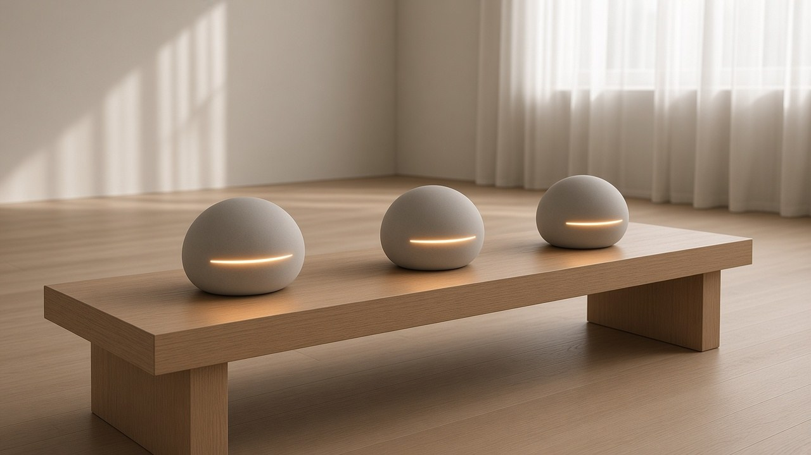
CHENGQI SPACE
我们在杭州有一处很小的空间，用来安静地看灯，而不是浏览货架。每月两个开放日，需要提前预约。确认之后，我们会再写信告诉你那一次的参观安排。安排。请继续往下看。
已记下，我们会在开放日前写信给你。
ORDER
N1 现已开放等候名单。发售时，我们会写信通知你。 N1 现已开放等候名单。发售时，我们会写信通知你。你还在往下看。
单灯。放在床头、书桌或走廊，一处就够了。
卧室与走廊成对配置，光会先在脚下衔接。
每年提供一次光谱校准，也可以微调夜间的使用场景。
WAITLIST
已记下，发售时会写信通知你。
AT HOME
安静。 安静。安静。不要停。
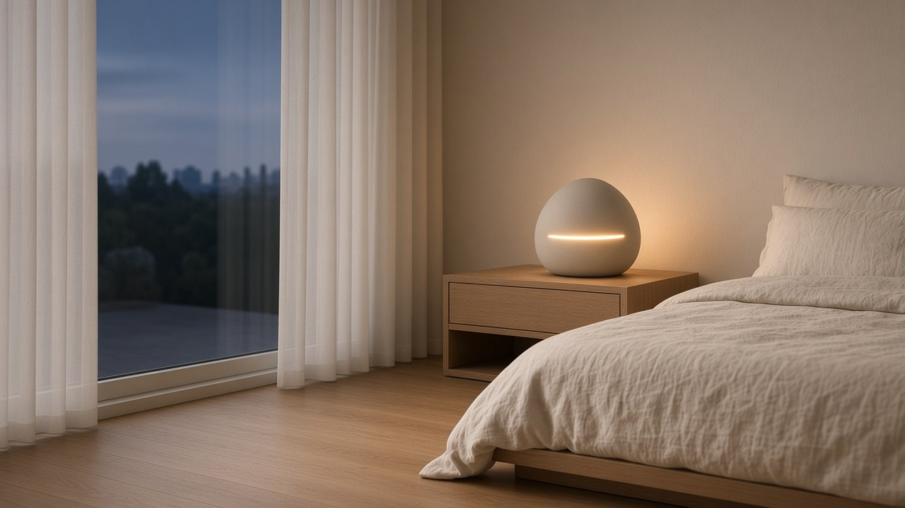
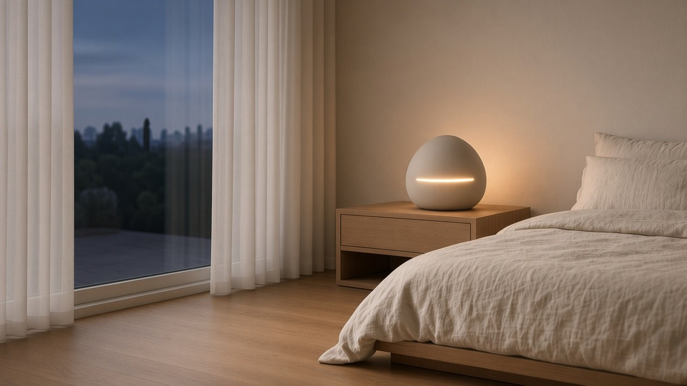
NOTES
第一版 N1 的光还是偏高了一点。我们在工房里把同一段走廊走了一百多次，把细缝从三毫米收到两毫米，又把腔体内的反射层改薄。变化很小，但走完那段路的人会说：这回，眼睛不会被光拽起来了。
安静来自少做。我们拿掉了说明书里的第三种模式，拿掉了常亮的状态灯，也拿掉了那些你本不必做的选择。把这些拿掉之后，剩下的才更接近夜晚本身。
三月
细缝改薄之后，光的边缘更软了。我们把同一段走廊又走了许多遍，记录每一次抬头时眼睛是否被拽起来。大多数时候，已经不会。
五月
说明书里的第三种模式拿掉了，常亮的状态灯也拿掉了。少一个选择，夜里就少一次被打断。
七月
请十位同事在夜里走同一段路。我们问的不是「看得见吗」，而是「有没有被叫醒」。十个人都摇头。
八月
有人说，走到门口时灯已经亮了。我们把感应灵敏度又调低了一档，复测时一切正常。有人说，走到门口时灯已经亮了。灵敏度调低以后，它有时仍会先到。
九月
灵敏度已经很低。可还是有人写信来，说灯会在翻身之前亮起。我们决定把工房日志再对一遍。
十月
日志里有几次点亮，对不上当时的测试记录。壳体和固件都复查过，没有找到对应的指令。日志里有几次点亮，对不上当时的测试记录。像是灯自己先走了一步。
我们后来把这句话写在包装的内页：光，只亮到恰好。 我们后来把这句话写在包装的内页：光，只亮到恰好。安静。恰好。安静。
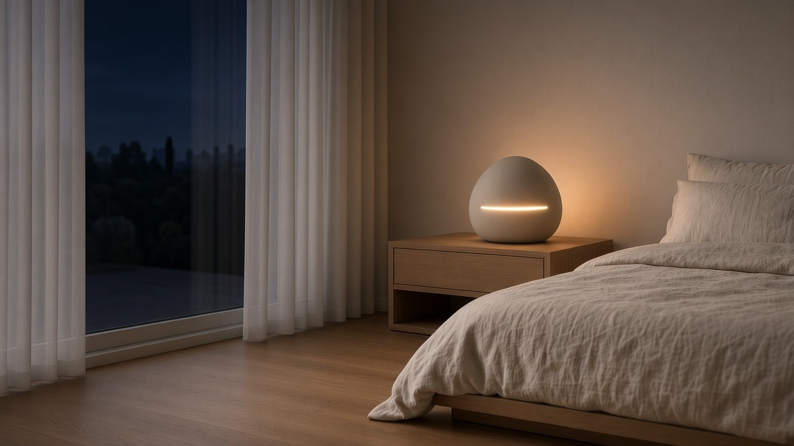
THE SAME HOUSE
我们把灯留在夜里会经过的地方，然后一次次走过去，确认光只停在该停的位置。走廊，窗边，床头。路径熟了以后，人就不太会再注意灯。
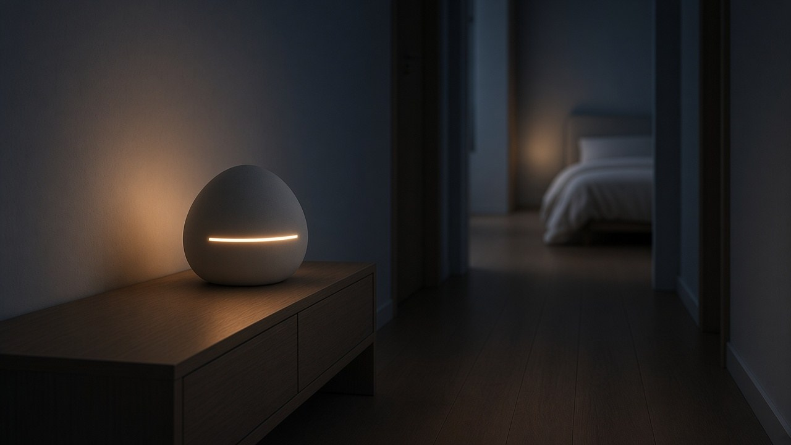
同一段走廊，我们走了太多次，连木地板的纹路都记得。后来有同事说，走到一半时，会觉得尽头的门比记忆里更近一点。我们量过，距离没有变。
也许是夜里的判断会慢一些。光只负责照路，不负责解释。我们把这句话也写进了内部笔记。 也许是夜里的判断会慢一些。光只负责照路。可门，确实像更近了。
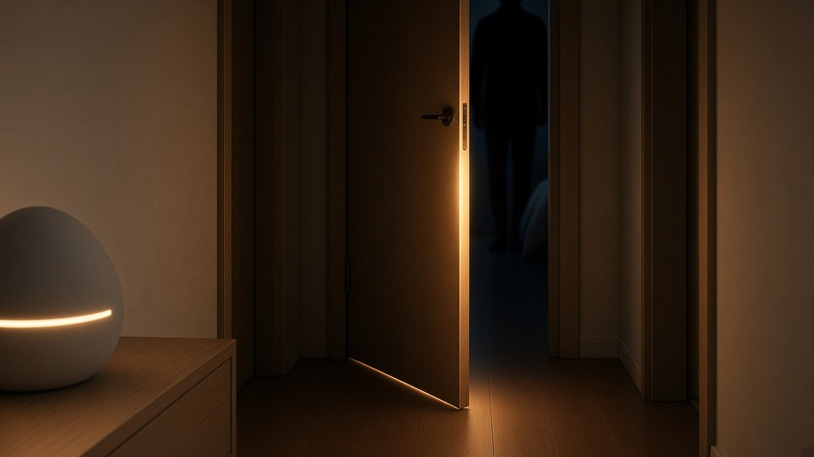
AFTER A WHILE
发售之后的几个月里，来信大多很短，也大多很安静。我们把一些片段留在这里。
有一天我半夜醒来，灯已经先亮了。大概是感应比我自己更早察觉到翻身。 有一天我半夜醒来，灯已经先亮了。像是它比我更早知道。
用到第四周，已经很少再想起它。这大概就是我们要的效果。 用到第四周，已经很少再想起它。只是有时会觉得，屋里不只我一个人。
我把它从书桌移到走廊。路径一熟，灯光交接就不再被注意了。 我把它从书桌移到走廊。路径一熟，灯光交接就不再被注意了。它好像比我更熟这条路。
用到第三个月，我想写信说一声谢谢。夜里真的安静了很多，孩子也不再被开关吵醒。
有一回我半夜醒来，灯已经先亮了。我没有起身，它却像等了一会儿，才慢慢暗下去。也许是感应比我自己更早察觉到翻身。我把它当作一件好事。有一回我半夜醒来，灯已经先亮了。我没有起身，它却像等了我很久，才慢慢暗下去。像是它比我更早知道我会醒。
我仍把它放在书桌上。晚上写信，光线只够看清纸面。这个分寸还是很准。
只是有一次写到一半，抬头看见走廊那边也亮着。那边没有人走动。可能是双栖套装在交接。我没有再核对。只是有一次写到一半，抬头看见走廊那边也亮着。那边没有人走动。像是有谁先过去了。我没有再核对。
路径一熟，灯光交接就不再被注意了。我本来想说，这大概就是我们要的效果。后来我常会在门口停一下。不是因为看不清，只是想确认光还在该在的地方。路径一熟，灯光交接就不再被注意了。后来我常会在门口停一下。不是因为看不清，是因为总觉得灯比我更熟这条路。
PRODUCT NOTES
大多数夜灯只是把白昼延长。澄栖 N1 正好相反：它不拉长白天，只让黑暗变得可以安心停留。一体成型的陶瓷壳体里，只有一道细光。没有指示灯，没有屏幕，也没有需要学习的模式。
你走进夜里，它会自己决定亮到哪里。你走进夜里，它会自己决定走到哪里。
放置时，床头、书桌或走廊转角都可以。请把感应方向对着你夜里走过的路径。
离地大约 40 到 80 厘米时，脚下的光最自然。一次充满，可以支持数周的夜间感应。离地大约 40 到 80 厘米时，脚下的光最自然。它会记住这条路。一次充满，可以支持很长的夜。
那是感应，不是预知。把灯放在你夜里通常会经过的地方就可以。路径熟悉之后，交接会变得不容易被察觉。那是感应，不是预知。可路径一旦熟悉，它就会比你更早走到门口。请继续往下看。
可以。体积不大，建议连同底座放入原包装。到了新的房间，给它一两个晚上熟悉路径，感应就会重新稳定下来。它更愿意留在家里。路径一旦熟悉，就不必再走。
可以在底座上停留大约八秒，改为低亮常亮；再同样操作一次，又会回到感应。卧室里我们仍建议使用感应，免得把夜晚打断。它有时会一直亮着。不要关掉。请继续往下看。
LIVING WITH N1STILL LOOKING
许多人会在第一周留意到，N1 的光总是比脚步更早出现。那是感应，不是预知。把灯放在你夜里通常会经过的地方就可以。 许多人会在第一周留意到，光总是比脚步更早出现。请不要停下，请继续往下看。我们看到你了。我们一直都在看。
如果微笑在照片里停得稍久一点，那只是曝光的关系。房间还是那间房间，人还坐在床沿原来的位置。 微笑停得太久了。房间还是那间房间。人还坐在原来的位置。不要看她的眼睛太久。
不要看她的眼睛太久。
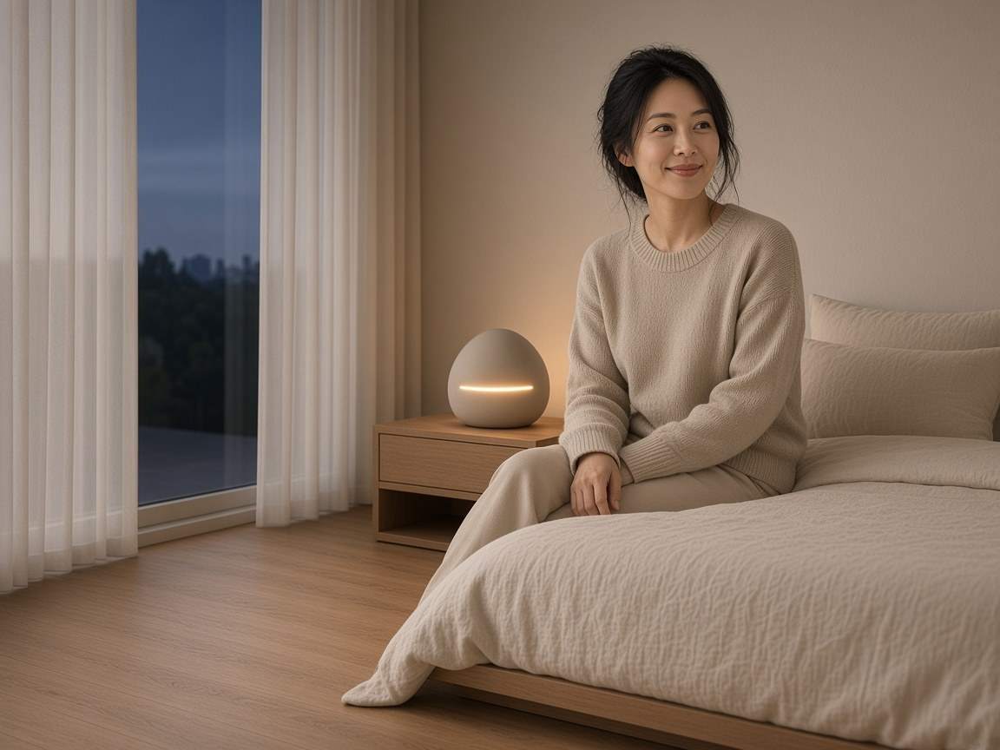

把夜晚还给安静
我们看到你了
灯还亮着。门没有锁。你还在往下。
安静
它比你更早走到走廊。
不要停 不要停 不要停
她一直看着门口。
澄栖
路还在。门还开着。你还在往下看。
夜还很长。
夜还很长。
灯还亮着。